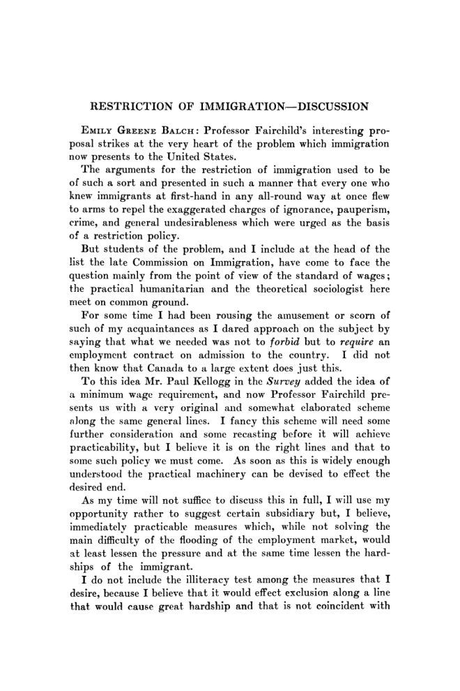

Washington, 1911: tarifa medida, orçamento federal e a história como teste
Leitura: 5 min
Washington, dezembro de 1911: Farnam propõe tratar cada lei como experimento, Emery e Willis divergem sobre medir custos para fixar tarifas e Taft pede um orçamento federal.


No almoço do dia 28 de dezembro de 1911, no Hotel Raleigh, o convidado de honra era o presidente da República. William H. Taft contou aos economistas que, ao assumir o cargo, encontrou as despesas do governo acima da receita em cerca de US$ 50 milhões. Chamou cada chefe de departamento e mandou cortar um tanto por cento. Admitiu, em seguida, que aquele era um modo muito ruim de economizar.
O suplemento de março de 1912 reúne as comunicações e os debates da vigésima quarta reunião anual, realizada em Washington de 27 a 30 de dezembro de 1911. As sessões trataram de tarifas, do orçamento federal, da vida rural, de imigração e emigração, do conceito de preço, do custo de vida e da administração científica do trabalho. Várias foram conjuntas com a American Sociological Society, a American Statistical Association e a American Association for Labor Legislation.
O que Taft pedia aos economistas?
Taft queria uma alternativa ao corte linear. Havia mais de um ano, uma comissão de especialistas estudava despesas, receitas e eficiência do governo. A proposta era agrupar o gasto por objeto, militar e civil, e dentro do civil educação, saúde, transporte e agricultura, para que congressistas, imprensa e contribuintes soubessem para onde ia o dinheiro. Ele observou que os Estados Unidos não tinham orçamento, e temia que o Congresso não renovasse a verba da comissão.
Por que a tarifa ocupou a sessão principal?
Henry W. Farnam abriu a reunião defendendo que a história dos Estados Unidos fosse lida como um laboratório, e que toda lei econômica previsse o registro de seus resultados. No dia seguinte, Henry C. Emery, presidente da Tariff Board, sustentou que um órgão técnico e apartidário pode medir diferenças de custo entre países; H. Parker Willis respondeu que o custo de produção não serve para fixar tarifas. Os dois textos têm páginas próprias.
Que outros temas ocuparam a reunião?
John L. Coulter mostrou, para oito estados do velho Sul a leste do Mississippi, a fragmentação das grandes propriedades: em cinquenta anos o número de fazendas quadruplicou e o tamanho médio caiu de 321 para 87 acres. B. H. Hibbard atribuiu o declínio da população rural sobretudo à atração das cidades e à mecanização. Henry P. Fairchild propôs um novo regime de imigração, e W. W. Husband mediu a emigração a partir dos Estados Unidos. Irving Fisher defendeu uma comissão internacional sobre o custo de vida.
Como andavam as contas da própria associação?
Mal. As aplicações caíram de US$ 3.000 para US$ 1.000 no ano, com a venda de dois dos três títulos para cobrir déficits anteriores, e o excedente acumulado desapareceu. Pelo cálculo do tesoureiro, cada novo sócio acrescentava cerca de US$ 1,60 às despesas, o que deixava US$ 1,40 da anuidade para os custos fixos. A reunião elegeu Frank A. Fetter presidente para 1912 e indicou Boston como primeira escolha para a reunião seguinte.
Na minha leitura
Na minha leitura, o fio comum do volume é a medição antes da decisão. Farnam quer leis que registrem os próprios efeitos, Emery quer uma repartição que meça custos, Taft quer um orçamento classificado por objeto e Fisher quer comparar preços e salários entre países. A divergência entre Emery e Willis mostra o limite do programa: medir bem não resolve qual pergunta se está medindo.
As contas da associação ilustram, em escala pequena, o mesmo problema. O tesoureiro separa custos fixos de custos que variam com o número de sócios e conclui que crescer não bastava para fechar o déficit. É a análise de custo marginal aplicada à própria casa.
Glossário
- Tariff Board
- comissão de especialistas criada pelo presidente Taft, com base na lei tarifária de 1909, para investigar custos e condições da indústria.
- Tarifa só para receita
- imposto de importação cobrado apenas sobre bens não produzidos no país, ou compensado por imposto interno, sem efeito protecionista.
- Schedule K
- capítulo da tarifa americana sobre lã e manufaturas de lã.
- Ad valorem
- imposto calculado como porcentagem do valor da mercadoria, em oposição ao imposto específico, cobrado por unidade física.
- Lei das cláusulas de contrato de trabalho (contract labor clause)
- proibição legal de admitir imigrantes contratados antes da chegada.
- Administração científica
- método de organização do trabalho associado a Frederick W. Taylor, baseado em estudo de tempos e salários por tarefa.
- Custo marginal
- acréscimo de custo provocado por uma unidade a mais de produção, ou, no caso da associação, por um sócio a mais.
Artigos (18)
- The Twenty-Fourth Annual Meeting — Programa da reunião (pp. 1–4). Programa da reunião de Washington, de 27 a 30 de dezembro de 1911, com sete sessões, quase todas no Hotel Raleigh. A primeira, conjunta com a American Sociological Society, teve os discursos presidenciais de Franklin H. Giddings e Henry W. Farnam. A sessão sobre tarifas, na George Washington University, foi presidida pelo secretário do Tesouro, Franklin MacVeagh. Seguem as sessões conjuntas com os estatísticos, sobre a vida rural, e com os sociólogos, sobre migração; três mesas-redondas; uma sessão da American Association for the Advancement of Science sobre os problemas das corporações; e uma sessão sobre segurança e saúde na mineração. JSTOR
- The Economic Utilization of History: Annual Address of the President — Henry W. Farnam, Yale University; discurso presidencial (pp. 5–18). Farnam contesta a tese de que a economia não admite experimentos de laboratório. Os governos experimentam o tempo todo, por meio de leis, e quanto mais democrático o país, mais disposto a experimentar em si mesmo: os dois lados da Guerra Civil decretaram que o papel do governo valia o ouro do povo, repetindo a inflação que Tughlak, governante do norte da Índia de 1324 a 1351, tentara com moedas de latão. Contra John Stuart Mill, para quem nem o método das diferenças nem o das variações concomitantes se aplicam à sociedade, propõe perguntas específicas em vez de gerais: não o efeito da tarifa sobre a riqueza nacional, mas sobre preços, distribuição ou monopólios. Os Estados Unidos seriam uma estação experimental privilegiada, comparável a um hospital com 46 enfermarias sob direção médica separada. Aponta lacunas de pesquisa, como o efeito da riqueza sobre a eficiência do trabalho, e defeitos do laboratório: a anulação de leis pelos tribunais, o ruído do debate e a precariedade dos registros. Propõe que toda lei econômica preveja em seu texto o registro de seus resultados e que cada legislatura tenha um anexo econômico. Distingue esse uso econômico da história da interpretação econômica da história. JSTOR · ler o comentário
- Economic Investigation as a Basis for Tariff Legislation — Henry C. Emery, presidente da Tariff Board (pp. 19–25). Emery reduz o tema a duas perguntas: um órgão independente e apartidário consegue reunir informação suficiente para uma política tarifária justa e, no sistema político americano, essa informação pode influenciar a legislação? Responde que sim a ambas. Na Europa, funcionários permanentes dos ministérios estudam as tarifas por uma geração e, no regime de gabinete, redigem os projetos; nos Estados Unidos, onde a lei nasce em comissões do Congresso, faltaria um órgão que fornecesse informação imparcial. Admite as dificuldades da doutrina protecionista de igualar a tarifa à diferença de custos de produção, mas diz que nenhuma lei comercial é aplicada com lógica rígida: a tarifa seria ajustada ao principal país concorrente, e ninguém propõe taxar café ou borracha. Sustenta que, para a maioria dos manufaturados básicos, a razão entre os custos de dois países pode ser determinada com precisão suficiente, como a Tariff Board teria feito para papel e para lã, e conta que começou cético. Argumenta que a investigação serve também a quem defende uma tarifa de receita, para prever a arrecadação e evitar incoerências como o produto final taxado abaixo da matéria-prima. Cita a unanimidade da junta, de três republicanos e dois democratas, sobre os fatos do Schedule K. JSTOR · ler o comentário
- Economic Investigation as a Basis for Tariff Legislation — H. Parker Willis, George Washington University (pp. 26–36). Willis declara de saída que a investigação econômica já mostrou os efeitos negativos das tarifas protecionistas, deixa de lado o debate abstrato e pergunta o que se quer saber sobre a tarifa. Propõe estudar, pelo método comparativo, seus efeitos sobre o capital investido e a organização das empresas, sobre os salários nominais e reais, sobre os recursos monopolizados cujo valor capitalizado a tarifa infla e sobre os preços pagos pelo consumidor. Rejeita a doutrina da plataforma republicana de igualar a tarifa à diferença de custos de produção, acrescida de um lucro razoável. Lista cinco premissas implícitas, como a de que custo monetário equivale a custo real, e, apoiado em Cairnes e Taussig, nega que custos monetários indiquem poder competitivo. Enumera cinco obstáculos práticos, da recusa de fabricantes estrangeiros em abrir os livros à variação de custos dentro de um mesmo país. No relatório da Tariff Board sobre papel, a diferença média era de US$ 5,30 por tonelada, mas as melhores fábricas americanas produziam ao custo das melhores canadenses: não precisavam da tarifa, e as piores não seriam salvas por ela. Conclui que a questão real é quanto do mercado interno reservar ao produtor nacional, matéria empírica e, no fim, política. JSTOR · ler o comentário
- Tariff Legislation--Discussion — E. V. Robinson, University of Minnesota (pp. 37–41). Robinson, sem texto escrito, atribui o movimento por uma comissão tarifária ao crescimento dos monopólios depois de 1898 e à tarifa máxima e mínima de 1909. Rejeita a doutrina do custo de produção: como todo comércio internacional se baseia em diferenças de custos comparativos, uma tarifa igual a essas diferenças proibiria todo comércio. Ainda assim, apoia uma comissão permanente, que poderia reclassificar as tarifas, traduzir direitos específicos em equivalentes ad valorem, comparar custos e preços e conter a troca de votos no Congresso. Vê nela também um instrumento de educação econômica do público e dos próprios economistas. JSTOR · ler o comentário
- Address of President Taft: At the Luncheon of the Economic Association, at the Raleigh Hotel, Washington, D. C., December 28, 1911 — William H. Taft, presidente dos Estados Unidos (pp. 42–47). Taft parte de uma constatação: o governo começava a recorrer a técnicos que conhecem o ofício, como os dois economistas postos na Tariff Board, cujo relatório serviria de base para discutir a legislação. O problema central, diz, é reduzir as despesas do governo e ao mesmo tempo melhorar sua eficiência, embora um governo não tenha o comando concentrado de uma corporação. Ao assumir, encontrou despesas acima da receita em cerca de US$ 50 milhões e cortou as estimativas nesse valor por ordem percentual aos departamentos, método que ele mesmo chama de muito ruim. A alternativa seria a comissão de economia e eficiência, em atividade havia mais de um ano: levantar o que cada departamento faz, eliminar duplicações, reagrupar repartições, comparar o custo de tarefas iguais entre departamentos e chegar a um orçamento de despesa e receita, que os Estados Unidos não tinham. Taft atribui essa ausência à facilidade de arrecadar. As despesas seriam classificadas por objeto, como fins militares, educação, saúde e transportes, para que Congresso, imprensa e contribuintes soubessem para onde vai o dinheiro. Pede aos economistas apoio à continuidade da comissão, que deveria durar cinco anos. JSTOR
- Rural Conditions in the South — John L. Coulter, Bureau of the Census; debatedores H. B. Frissell, E. C. Branson, William H. Glasson e W. E. B. DuBois (resumo) (pp. 48–50). Resumo da sessão; o texto completo saiu nas publicações da American Statistical Association. Coulter sustenta que as mudanças agrícolas do Sul em cinquenta anos foram talvez as maiores já ocorridas em período igual. Para oito estados do velho Sul a leste do Mississippi, a população dobrou, a área em fazendas cresceu apenas 1,4%, o número de fazendas quadruplicou e o tamanho médio caiu de 321 para 87 acres, enquanto a terra melhorada subiu de 33,5% da área total em 1860 para 49,4% em 1910. O valor da propriedade rural caiu à metade entre 1860 e 1870, só voltou ao nível de 1860 em 1900 e mais que dobrou na década seguinte. A grande plantação deu lugar à pequena fazenda familiar menos pela difusão da propriedade do que pelo arrendamento, que Coulter descreve como substituto do trabalho assalariado. Frissell distingue o meeiro, pouco acima do assalariado, do arrendatário que paga renda. Glasson atribui parte da alta dos valores à depreciação do dólar-ouro. DuBois lista cinco condições que a indústria moderna exige, da liberdade pessoal do trabalhador à imparcialidade dos tribunais, e diz que todas eram violadas no Sul rural. JSTOR
- The Decline of the Rural Population — B. H. Hibbard, Iowa State Agricultural College; debatedor Alexander E. Cance (resumo) (pp. 51–52). Resumo da sessão. Hibbard lembra que a queixa contra o despovoamento do campo vem dos clássicos da Grécia e de Roma, reapareceu na França e na Inglaterra e, nos Estados Unidos, se arrasta desde a Guerra Civil. Sustenta que a causa principal não é a redução das famílias, mas a atração das cidades, que pediam mais trabalhadores enquanto o campo aprendia a produzir com menos. Distingue duas regiões de declínio. Na Nova Inglaterra e em partes de Nova York e da Pensilvânia, a perda de população veio com recuo da agricultura: menos rebanhos, menos área de grãos e feno, fazendas em menor número e maiores. No Meio-Oeste, de Columbus a Lincoln e de St. Paul a St. Louis, a agricultura avançou e o valor da fazenda média dobrou em dez anos; ali máquinas e cavalos substituíram homens. Um homem que arava um acre por dia passara a arar cinco, e com a segadeira-atadeira dois homens faziam o trabalho de oito. Onde a terra mais se valorizou, a população mais caiu. Cance nota que o censo classifica como rurais pequenas vilas fabris e aponta a baixa remuneração e a dureza do trabalho agrícola como causa duradoura do êxodo. JSTOR
- The Restriction of Immigration — Henry P. Fairchild, Yale University (pp. 53–62). Fairchild resume as objeções correntes ao regime de imigração em oito rubricas: número excessivo, má distribuição pelo território, assimilação lenta, pressão sobre salários e padrão de vida, pauperismo e crime, fluxo estimulado por companhias de transporte e agentes, entrada ilegal pela burla da proibição de contratos prévios de trabalho e ausência de benefício para os países de origem. Examina os remédios em discussão, como o teste de alfabetização, que cortaria o fluxo porque mais de um quarto dos imigrantes acima de catorze anos não sabia ler nem escrever, e conclui que quase todos atacam apenas o número. Seu plano tem três peças: controle federal da distribuição, com o imigrante escolhendo antes de partir um destino numa lista de vagas aprovadas; exigência de passaporte; e revogação da proibição de contratos, substituída por contratos com selo oficial e salário mínimo por localidade ou indústria. Acrescenta um rodízio anual, por acordo internacional, pelo qual a cada ano só trabalhadores não qualificados de um país ou grupo de países seriam admitidos, o que reduziria o número e permitiria aos países de origem usar a emigração a seu favor. Reconhece que a medida enfrentaria obstáculos políticos e administrativos. JSTOR
- Restriction of Immigration--Discussion — Emily Greene Balch, W. F. Willcox, J. W. Jenks e Max J. Kohler (pp. 63–78). Balch diz que o debate deixou as acusações exageradas e passou a girar em torno dos salários; aprova a direção do plano, rejeita o teste de alfabetização e propõe medidas imediatas, como passagem válida até qualquer ponto do país, retorno garantido, fim da terceira classe e direito de recurso contra a exclusão. Willcox estima a entrada líquida da década de 1900 a 1910 entre 536 mil e 552 mil pessoas por ano, bem abaixo do milhão anual citado por Fairchild, e vê na pressão sobre salários a única objeção séria. Jenks simpatiza com o espírito da proposta, mas duvida de sua viabilidade imediata. Kohler a considera impraticável e contrária a tratados e defende a distribuição voluntária. JSTOR
- The Significance of Emigration — W. W. Husband, secretário da Comissão de Imigração (pp. 79–85). Husband sustenta que os Estados Unidos, maior receptor de imigrantes do mundo, estavam se tornando também um grande país de emigração. Mede dois fluxos. O primeiro, de estrangeiros residentes que partiam para viver no exterior, somou 1.118.977 pessoas nos quatro últimos anos fiscais; para ele, esse retorno ajuda a limitar o próprio volume de imigração, porque a oportunidade industrial não é ilimitada. O segundo, a emigração para o Canadá, é seu tema principal: as entradas anuais de imigrantes vindos dos Estados Unidos passaram de 18.055 em 1901 para 121.451 em 1911, mais de 620 mil na década, cerca de dois terços cidadãos americanos. Era um movimento de agricultores, 72% do total entre 1903 e 1911, de fazenda para fazenda, que levava, por estimativa, cerca de US$ 1.000 por pessoa em dinheiro e bens. As causas seriam a terra livre ou barata, como na antiga marcha para o Oeste americano, e a propaganda do governo canadense e das ferrovias; o Departamento de Imigração do Canadá gastou US$ 451.377 nos Estados Unidos em dois anos, 22% de suas despesas. Parte considerável dos emigrantes voltava. Husband prevê que o fluxo dure até a ocupação das províncias do oeste canadense. JSTOR
- Significance of Emigration--Discussion — Edward Alsworth Ross e S. A. Cudmore (pp. 86–88). Ross sustenta que o dado decisivo é o fim das terras livres: o imigrante deixara de colonizar o território para competir no mercado de trabalho. Compara o crescimento populacional da década em estados agrícolas, como Minnesota, com 19%, e Iowa, sem crescimento, com o de estados industriais, como Nova York, com 25%, e Nova Jersey, com 35%, e associa a concentração no Nordeste à dificuldade de manter o padrão de vida com os salários do Leste. Cudmore, da Universidade de Toronto, explica o fluxo entre os dois países pela fome de terra e pela atração das cidades: a ferrovia Canadian Pacific, concluída em 1886, abriu o noroeste canadense à colonização, e a tarifa buscava criar cidades no próprio Canadá. JSTOR
- The Price Concept in Relation to Value: Round Table Meeting — F. A. Fetter (coordenador), Walter E. Clark, J. R. Turner, A. P. Usher, A. B. Wolfe, B. M. Anderson, H. G. Brown, G. P. Watkins, A. A. Young e S. N. Patten (pp. 89–91). Fetter abre a mesa com um levantamento de 115 definições de preço: 57 o tratam como expressão monetária e 58 não. Cada grupo se subdivide conforme a relação com o conceito de valor de cada autor: preço como valor de troca objetivo ou poder de compra, como expressão do valor subjetivo ou utilidade, ou como simples razão. Escolher uma definição, diz, obriga a decidir entre moeda ou não, mercado ou transação isolada, valor subjetivo ou objetivo, quantidade ou razão. Clark propõe reservar preço para a expressão em moeda e chamar a expressão em outros bens de valor de escambo. Wolfe prefere a velha definição de preço como poder de compra em moeda; Anderson nega que preço possa ser definido em termos de valor e diz que o valor relevante é o social; Young quer uma definição separada da teoria do valor, como quantidade de moeda com uma razão implícita; Patten observa que definições costumam servir para encurralar adversários. No fecho, Fetter argumenta que o uso comercial é inconsistente e mutável e que cabe aos economistas extrair dele as ideias essenciais e conservá-las num sistema de termos coerente. JSTOR
- An International Commission on the Cost of Living — Irving Fisher, Yale University (pp. 92–101). Fisher parte da alta mundial do custo de vida e dos relatórios recentes de Massachusetts, do Canadá, do Senado americano e do Departamento do Trabalho da França, além do inquérito da Board of Trade britânica. Propõe uma comissão internacional oficial com três objetivos: reunir e comparar dados sobre salários, custo de vida e preços no mundo; investigar causas e efeitos; discutir remédios. O argumento central é que o problema é internacional: a alta é muito parecida em vários países, logo as causas provavelmente também, e enfrentá-la localmente seria como os moradores da baía de Fundy tentarem impedir a maré. A comissão padronizaria estatísticas, pois dois métodos aplicados a um mesmo país divergem tanto quanto países entre si, e separaria a simples alta de preços da alta mais rápida que a dos rendimentos. Fisher lista as causas alegadas, de ouro e crédito a intermediários, trustes, sindicatos, armazenagem frigorífica e armamentos, e observa que cada agente acusa o vizinho. Registra que a maioria dos relatórios aponta a grande produção de ouro e reafirma que, nos Estados Unidos, ouro e crédito eram as causas principais. Reconhece ter sido antecipado por Stephen Bauer, de Basileia. JSTOR
- Recent Investigations on the Cost of Living — Henry J. Harris, Library of Congress (pp. 102–108). Harris resenha as investigações oficiais sobre custo de vida dos cinco anos anteriores, em três grupos. O primeiro é o inquérito internacional da Board of Trade britânica sobre aluguéis de moradias operárias, preços de varejo de alimentos e combustível e salários em ofícios selecionados, feito em cidades britânicas em outubro de 1905 e estendido à Alemanha, à França, à Bélgica e, em 1909, aos Estados Unidos, com orçamentos familiares de uma semana normal. Segundo Harris, os editores encontram a situação do operário americano mais favorável que as demais, a do britânico melhor que a do alemão, do francês e do belga, e a do belga a menos favorável, mas advertem que seus índices mostram tendências, não razões exatas. O segundo grupo reúne os orçamentos domésticos do escritório estatístico imperial alemão, com 860 famílias em 1907–08, e do escritório municipal de Estocolmo, com 150 famílias. O terceiro compreende os estudos de França, Amsterdã e Trieste baseados em livros de contas de instituições, que mostram alta recente dos preços. Destaca ainda o relatório do Senado americano, em quatro volumes. Conclui que, exceto o britânico, nenhum estudo compara países ou períodos, e que uma investigação internacional cooperativa seria a primeira do gênero. JSTOR
- The Cost of Living--Discussion — Edward F. McSweeney, Samuel H. Barker e T. N. Carver (pp. 109–116). McSweeney prevê que os preços, em alta havia catorze anos, continuariam subindo sem acompanhamento dos salários; como as causas seriam internacionais, fatos e remédios também deveriam sê-lo. Observa que o custo de vida subiu também em países sem tarifa e sem trustes e destaca o desperdício da guerra e das doenças evitáveis. Barker sustenta que o padrão-ouro não faz justiça entre devedor e credor e propõe uma moeda emitida pelo governo e regulada por um número-índice para manter estável o nível geral de preços. Carver apoia a comissão, pede que não restrinja o escopo e aponta fatores pouco estudados, como a pressão das vendas e da propaganda e o custo dos litígios, que compara ao dos armamentos europeus. JSTOR
- Industrial Efficiency and the Interests of Labor: Round Table Discussion — Harlow S. Person (coordenador), William Kent, C. W. Mixter, Emily G. Balch, Willard E. Hotchkiss, John C. Duncan, Rudolph Seubert, F. L. Hutchins e outros (pp. 117–130). Person reformula o tema: qual a influência da administração científica, associada a Taylor, Emerson e Gantt, sobre o trabalhador e sobre o trabalho como grupo produtivo. Kent discute o caso, relatado por Taylor, de 600 trabalhadores com salário médio de US$ 1,15 por dia substituídos por 140 com US$ 1,88, e sustenta que a economia obtida, US$ 75 mil por ano na Bethlehem Steel, financia outros empregos, porque a quantidade de trabalho no mundo não é fixa. Mixter distingue o sistema de tarefa e bônus, com tempos medidos por estudo, do sistema de prêmio, que equivaleria a tarifas por peça cortadas de antemão, e propõe um salário-base fixado por negociação coletiva. Duncan diz que os limites salariais de Taylor vinham de experimentação; Seubert relata que o corte dos bônus na Midvale reduziu a produção até sua restauração; Hutchins sustenta que eficiência é sobretudo questão de gestão. Person encerra respondendo a nove críticas: entre outras, que as tarifas não seriam cortadas, porque são fixadas por experimento para cada combinação de homem, máquina, material e tarefa, e que não haveria desemprego súbito, pois a reorganização é lenta e feita caso a caso. JSTOR
- Business Meetings at Washington, D. C.: December 27 to 30, 1911 — T. N. Carver (secretário e tesoureiro), Davis R. Dewey (editor) e comissão de auditoria (pp. 131–146). Atas e relatórios. O secretário registra 2.404 sócios e assinantes, com ganho líquido de 702 no ano. O tesoureiro mostra o fim do excedente acumulado e prevê déficit para 1912. Dewey informa que o primeiro volume da American Economic Review teve quatro números e 982 páginas. A associação eleva a anuidade de US$ 3 para US$ 5, a partir de 1913, e a taxa vitalícia para US$ 100, troca o Comitê de Publicação por um Conselho Editorial, suprime o Handbook de 1912 e elege Frank A. Fetter presidente. JSTOR
Fontes
- The Twenty-Fourth Annual Meeting (pp. 1–4). JSTOR · Internet Archive (PDF)
- The Economic Utilization of History: Annual Address of the President (pp. 5–18). JSTOR · Internet Archive (PDF)
- Economic Investigation as a Basis for Tariff Legislation (pp. 19–25). JSTOR · Internet Archive (PDF)
- Economic Investigation as a Basis for Tariff Legislation (pp. 26–36). JSTOR · Internet Archive (PDF)
- Tariff Legislation--Discussion (pp. 37–41). JSTOR · Internet Archive (PDF)
- Address of President Taft: At the Luncheon of the Economic Association, at the Raleigh Hotel, Washington, D. C., December 28, 1911 (pp. 42–47). JSTOR · Internet Archive (PDF)
- Rural Conditions in the South (pp. 48–50). JSTOR · Internet Archive (PDF)
- The Decline of the Rural Population (pp. 51–52). JSTOR · Internet Archive (PDF)
- The Restriction of Immigration (pp. 53–62). JSTOR · Internet Archive (PDF)
- Restriction of Immigration--Discussion (pp. 63–78). JSTOR · Internet Archive (PDF)
- The Significance of Emigration (pp. 79–85). JSTOR · Internet Archive (PDF)
- Significance of Emigration--Discussion (pp. 86–88). JSTOR · Internet Archive (PDF)
- The Price Concept in Relation to Value: Round Table Meeting (pp. 89–91). JSTOR · Internet Archive (PDF)
- An International Commission on the Cost of Living (pp. 92–101). JSTOR · Internet Archive (PDF)
- Recent Investigations on the Cost of Living (pp. 102–108). JSTOR · Internet Archive (PDF)
- The Cost of Living--Discussion (pp. 109–116). JSTOR · Internet Archive (PDF)
- Industrial Efficiency and the Interests of Labor: Round Table Discussion (pp. 117–130). JSTOR · Internet Archive (PDF)
- Business Meetings at Washington, D. C.: December 27 to 30, 1911 (pp. 131–146). JSTOR · Internet Archive (PDF)
- Sumário da edição no JSTOR: The American Economic Review, vol. 2, nº 1 (suplemento).
Documento em domínio público (EUA, publicado antes de 1931), via JSTOR Early Journal Content e Internet Archive. Resumo e comentário do autor deste site, sem afiliação com a American Economic Association. Encontrou um erro? Escreva: a correção é publicada no próprio texto, com data.
← Nº 117 · Março de 1912: salário mínimo, notas bancárias e progresso Nº 119 · Junho de 1912: a tarifa da lã, a arte de gastar e a equação de trocas →